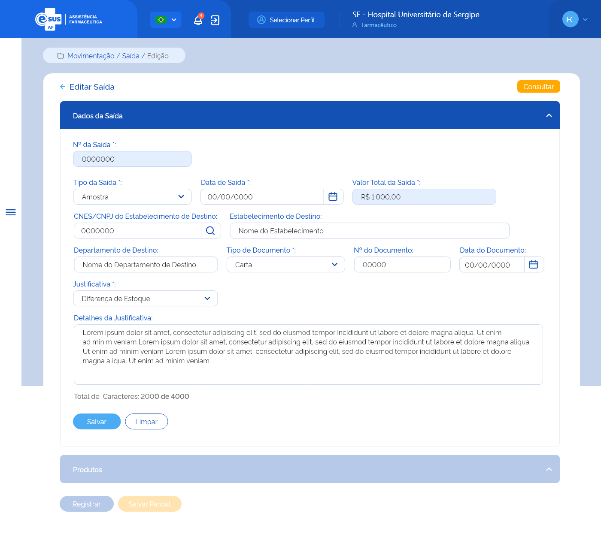

e-SUS AF - Documentação Negocial
Home
Especificações Técnicas
Documento de Mensagens
Documento de Regras
Especificações
ETE001 - Realizar Login
ETE002 - Cadastrar Usuário do Sistema
ETE003 - Recuperar Senha
ETE004 - Consultar Permissões de Acesso
ETE005 - Atribuir Perfil de Acesso
ETE006 - Detalhar Permissão de Acesso
ETE007 - Consultar Meus Perfis
ETE008 - Solicitar Perfil
ETE009 - Detalhar Meu Perfil
ETE010 - Consultar Perfil
ETE011 - Cadastrar Perfil
ETE012 - Detalhar Perfil
ETE013 - Consultar Entes
ETE014 - Cadastrar Ente
ETE015 - Consultar Estabelecimento
ETE016 - Cadastrar Estabelecimento
ETE017 - Editar Estabelecimento
ETE018 - Detalhar Estabelecimento
ETE019 - Consultar Entrada
ETE020 - Cadastrar Entrada
ETE021 - Editar Entrada
ETE022 - Detalhar Entrada
ETE023 - Consultar Saída
ETE024 - Cadastrar Saída
ETE025 - Editar Saída
ETE026 - Detalhar Saída
ETE027 - Emitir Relatório de Posição de Estoque
ETE028 - Detalhar Relatório de Posição de Estoque
ETE029 - Consultar Usuário SUS
ETE030 - Cadastrar Usuário SUS
ETE031 - Editar Usuário SUS
ETE032 - Detalhar Usuário SUS
ETE033 - Gestão de Integrações
ETE034 - Configurar Integração Barramento AF
ETE035 - Detalhar Integração Barramento AF
ETE036 - Atualizar Dados Cadastrais de Integração Barramento AF
ETE037 - Gestão de Estoques
ETE038 - Configuração de integração SI BNAFAR
ETE039 - Autenticação com GOV.BR
Para Validação
ETE - Gerenciar Perfil
ETE005 - Atribuir Permissão de Acesso
ETE014 - Adicionar um ente / instituição ao e-SUS AF
ETE023 - Consultar Saídas
ETE024 - Cadastrar Saídas
ETE025 - Editar Saídas
ETE026 - Detalhar Saídas
ETE029 - Estornar Saída
ETE040 - Cadastro de Entes
e-SUS AF - Documentação Negocial
Links Internos
RGN005
MSG006
ETE034
Protótipo 003
Link para protótipo no Adobe XD
